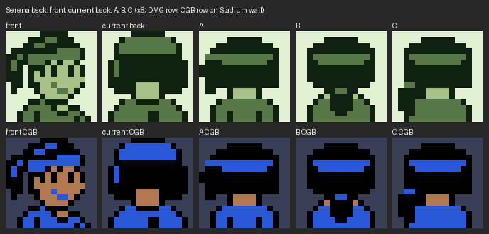

Every question waiting on your answer, with its pictures. Answered questions come off this list. Reply in chat with the number, e.g. "Q12: shared".
6 open · updated 2026-10-28
Q8
New patron ideas
Which to keep, per venue?
Stadium: FRANK: hot dog vendor, paper hat, tray; BIG WIG: rainbow wig, face paint; new: POM: pom-pom beanie, team scarf; BIRDY: kid in a bird-mascot hat; BUGLE: band trumpet raised
Lumber Lodge: TRAPPER: fur hat with ear flaps; RANGER: flat-brim ranger hat; ANGLER: bucket hat with lures
Bistro: SOMMELIER: slick hair, wine cup on a chain; NONNA: grey bun, round glasses; MIME: white face, striped shirt
Igloo: SHRED: snowboarder, goggles on a beanie; MUFFY: earmuffs, long scarf; CUB: kid in a polar-bear hood
Chrome Cow: DJ: big headphones; BIKER: round helmet, goggles; RAVEN: goth, two tall pigtails
Teahouse: SENSEI: bald, long white beard; KITSUNE: fox mask on the side of the head; new: MONK: shaved head, prayer beads, or POET: tall black hat, brush behind the ear
Jungle Zoo: TUCO: toucan, big beak; ELLIE: elephant ears; new: ZIGGY: zebra, stripy mane, or PINKY: flamingo, curved neck
Color only
Q9
SERENA back
A, B, C or none?
A: high ponytail to the side
B: ponytail centred, hanging down
C: low ponytail over one shoulder

Q10
CEDAR and ASH backs
CEDAR A, B or C? ASH A, B or C?
CEDAR A: cap seam, plaid · B: hair on collar, yoke · C: axe handle